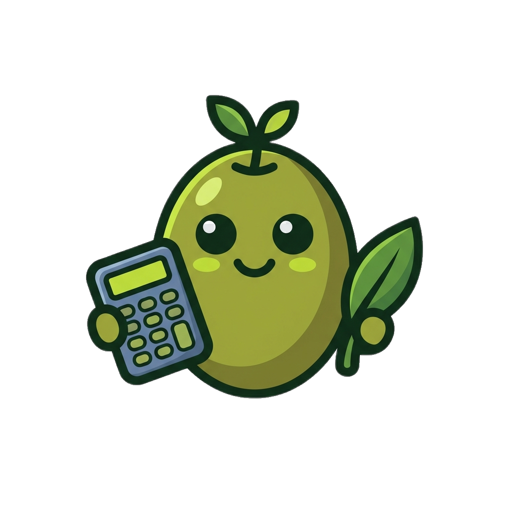

01
Sales
Runs discovery, qualifies fit, and closes new advisory relationships.

Predictable tax advisory, built to scale
Olea Tax Co. is moving beyond the solo-advisor model. This concept positions the firm around a premium pod system: strategist-led planning, dedicated implementation support, clear workflow ownership, and a workload design that protects quality instead of burning out the team.
The value proposition
The PDFs point toward a stronger website story: clients are not buying isolated advice. They are buying continuity, execution, and a team structure that preserves quality as the firm grows.
Specialized roles distribute workload intentionally so the service can grow without making quality fragile.
Dedicated EAs handle implementation workflows so strategies do not die in a PDF or after a planning call.
Maintenance cycles create a clear annual rhythm for retention, advisory touchpoints, and predictable cash flow.
The pod model
Instead of hiding the operating model, this concept turns it into proof. The structure itself becomes part of the premium story.
Runs discovery, qualifies fit, and closes new advisory relationships.
Builds the tax strategy, leads delivery calls, and owns the advisory relationship.
Executes implementation items like entity changes, Augusta Rule workflows, and accountable plans.
Extends execution capacity so strategy can move fast without overwhelming one support lane.
Assigns tasks, tracks client status, schedules touchpoints, and prevents bottlenecks.
Client workflow
Sales call clarifies fit, goals, entity setup, urgency, and current tax posture.
The strategist builds the plan and pressure-tests decisions before they are presented.
The client receives a clear roadmap, next actions, and logic behind every move.
EAs and workflow support drive the details so execution happens, not just discussion.
Maintenance cycle
The site should make this rhythm feel simple and inevitable: build the first pod, cap workload, maintain recurring client value, then duplicate the system for growth.
Adjust strategy before deadlines create pressure.
Lock in decisions while there is still time to act.
Client load stays capped so service quality remains premium.
Every pod can be trained, measured, and duplicated with less chaos.
Operational proof
Instead of treating team workload as backstage information, this concept translates it into a service-quality promise: better focus, fewer dropped balls, and a calmer delivery engine.
Work is scoped intentionally so no one has to hold the whole system on their back.
The sales lane is structured, measured, and sustainable — not chaos-driven.
The strategist workload is calibrated to preserve judgment, responsiveness, and quality.
Messaging angle
The website should feel calm, operational, and quietly premium — not panicked, loud, or generic.
The structure signals reliability beyond one person’s calendar, mood, or available bandwidth.
Implementation support becomes a visible product differentiator, not a hidden back-office note.
Client capacity caps are framed as a quality promise, not a scarcity gimmick.
Conversion
This concept should convert around clarity: who the model is for, what happens next, and why the operating system is better for the client.
We review your current tax posture, entity structure, planning opportunities, and whether a strategist-led pod is the right fit for your situation.
Draft CTA only — still a concept, not a connected booking flow.
FAQs
Because the team structure is the product advantage. It explains why service is more consistent, proactive, and implementation-focused.
No. The strategist still owns the relationship. The pod simply makes execution and communication more reliable.
Because sane workload design leads to better response quality, stronger attention, and less risk of important details being missed.